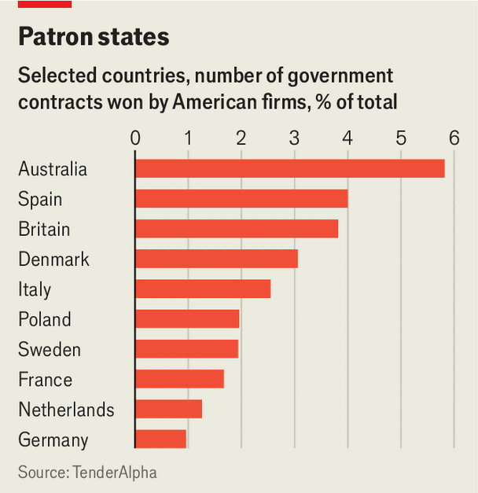

America Inc has a tight grip on allied governments
Companies from Palantir to Lockheed account for a small share of spending, but are hard to shake
Aug 20th 2026
“Imiss nothing,” says Dirk Schrödter, the digitisation minister for the German state of Schleswig-Holstein. Over a video-call using OpenTalk, a German alternative to Microsoft’s Teams, he explains how in the past two years he has moved some 30,000 of the state’s civil servants from the American company’s collaboration and productivity tools to open-source alternatives. He has now begun the process of shifting staff from Windows to Linux, an open-source operating system. The move has attracted the attention of public officials elsewhere who are also keen to cut ties with America’s tech giants. “Every week we have questions from other states, other cities and governments inside and outside of Europe,” he says.
The growing interest in open-source software reflects a new geopolitical reality. America has long used its commercial prowess to hurt enemies, as when imposing sanctions on Iran and Russia. But now even allies worry that it could cut off their access to critical technologies—or at least threaten to during, say, a trade negotiation.
Governments abroad are examining the extent to which their ability to operate depends on American suppliers. Fears were stoked last May when Karim Khan, then the International Criminal Court’s chief prosecutor, lost access to his Microsoft email account after President Donald Trump brought sanctions against the court over its issuing of an arrest warrant for Binyamin Netanyahu, Israel’s prime minister. (Microsoft says it did not cut its service.) Another jolt came this June when Mr Trump forced Anthropic, an artificial-intelligence lab, to temporarily cut off access to its latest models in foreign countries. America’s allies also took note when it twice paused its supply of weapons to Ukraine last year.
American firms win a small share of the overall contracts tendered by governments abroad. But their products and services often underpin critical government functions. Various efforts are thus under way to reduce reliance on American suppliers and nurture domestic alternatives. In many cases, however, doing so will be enormously difficult.
Europe in particular has emerged as a centre for efforts to flush America Inc out of government supply chains. France’s national government is planning to ditch Teams and wants to move some computers to Linux. Local governments, including the cities of Reus in Spain and Aarhus in Denmark, have turned to European cloud providers such as Nextcloud and Hetzner, both from Germany. In June the European Commission unveiled a plan to boost the continent’s “technological sovereignty” that, among other things, aims to shift the processing of sensitive government data to such providers. Last year Spain cancelled an order for F-35 fighter jets, supplied by America’s Lockheed Martin. British politicians are urging the prime minister to implement a break clause in a contract between Palantir, an American technology firm, and the National Health Service.
The Economist’s estimates suggest that, at an aggregate level, American companies account for a modest share of public spending abroad. We calculate that, of the $25trn in sales generated last year by listed American companies, perhaps $500bn (or 2%) came from foreign governments. That is equivalent to roughly 7% of government procurement in OECD countries other than America, which account for an overwhelming majority of the spending.
Some countries are more dependent than others. Measured by the number of government contracts won by American firms last year, Australia (6% of contracts) and Britain (4%) are more reliant than France (2%) and Germany (1%), according to figures from TenderAlpha, a data provider (see chart).

Yet American firms play an outsize role in critical areas of government. We estimate that roughly two-fifths of the business that American companies generate from foreign governments is in information technology and defence. (Pharmaceuticals and medical equipment, purchased by public health systems around the world, make up another large chunk.)
Often that is because there are few alternatives. Alphabet, Amazon and Microsoft control two-thirds of the global cloud-computing market, according to Synergy Research, a firm of analysts. Forrester, another research group, reckons that American providers account for between seven and nine of the ten largest vendors for most segments of enterprise software.
Those substitutes that do exist are frequently inferior. Sometimes the loss is negligible: on OpenTalk users cannot send emojis flying across the screen. But other shortcomings are more serious. LibreOffice, the open-source productivity-software package for which many governments are opting, lacks the AI features offered by Microsoft—a weakness that will only become more pronounced as the technology advances. OVHcloud, a French cloud-computing provider that is Europe’s biggest such firm, generates about one-hundredth the revenue of Amazon Web Services, making it difficult to compete on price or keep up on innovation. Similarly, governments that want the most advanced air-defence system must turn to Lockheed and RTX, another American armsmaker, which together produce the Patriot.
Switching costs can be hefty, too. Lockheed supplies F-35s to governments from Norway to Belgium. Those countries could instead opt for a European jet, such as the Rafale or Typhoon, even if they are less advanced. But that would require a vast operational overhaul, including retraining pilots and support crews and replacing weapons inventories—a tough sell when huge sums have already been spent on Lockheed jets.
Or consider patient-record systems in hospitals. The hefty cost of swapping to a new vendor is partly why Norway’s parliament voted in June to keep using Epic, an American provider of health-care databases, despite dissatisfaction with the software among doctors.
The dependence of local companies on American suppliers further complicates matters. Roy Illsley of Omdia, another research firm, points out that much of the software OVHcloud runs on comes from VMware, which is owned by Broadcom, an American company.
Governments that do shun America’s suppliers risk irritating its tempestuous president, which could make the superpower an even less dependable ally. Pieter Wezeman of SIPRI, a think-tank, notes that in July Denmark plumped for maritime-patrol aircraft made by Boeing, an American aerospace giant, over European alternatives, which he reads as a signal that the country does not want to alienate America despite clashes over Greenland.
For consolation, America’s allies should remember that there are plenty of dependencies in the other direction. Much of America’s federal government runs on software provided by Germany’s SAP. And American firms selling to foreign governments often depend on global supply chains. The rear fuselage of every F-35 is built by BAE Systems, a British weapons manufacturer, in Lancashire. The most advanced chips used in cloud computing are made in facilities operated by TSMC, a Taiwanese manufacturer, using gear from ASML, a Dutch one. America’s allies might usefully focus on making themselves even more indispensable. ■